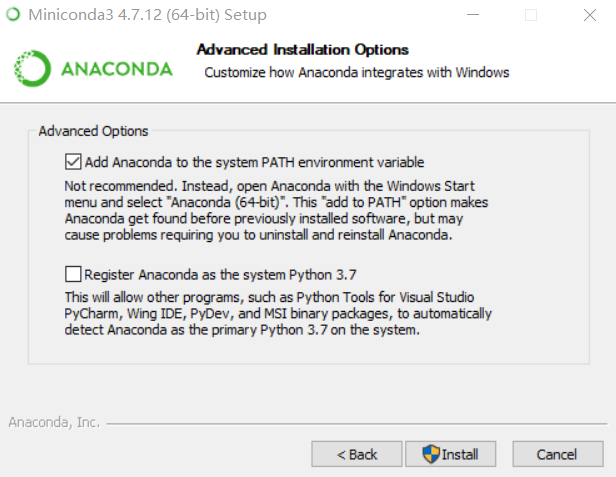
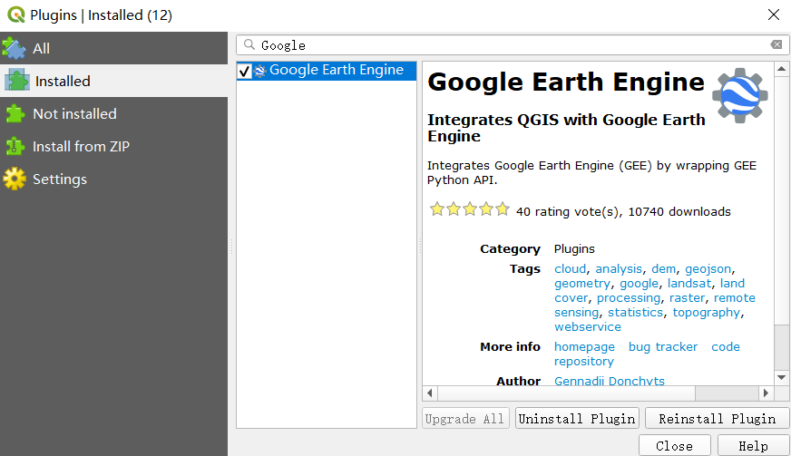
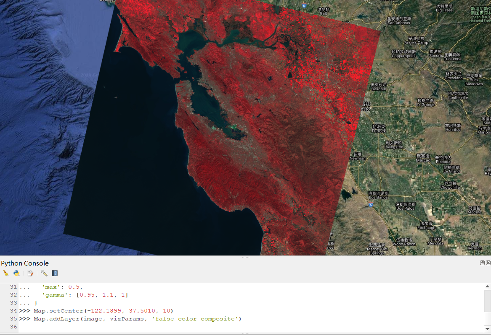
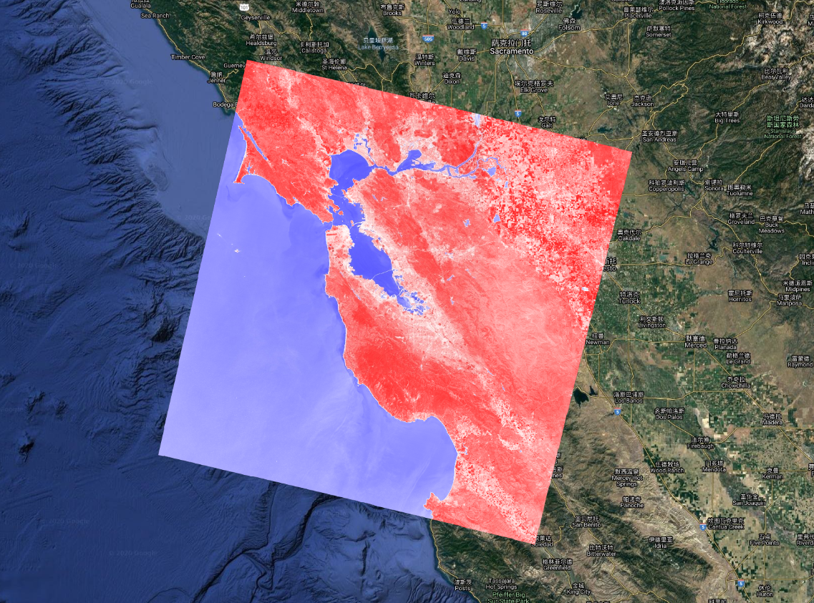
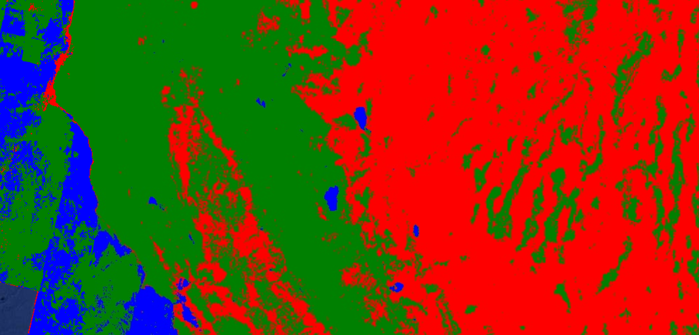
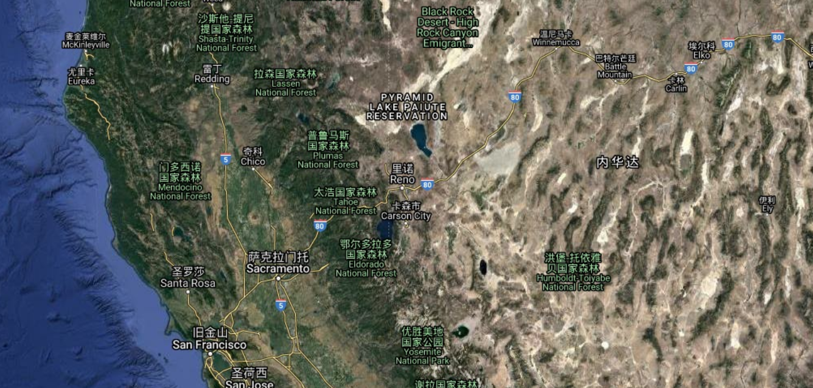
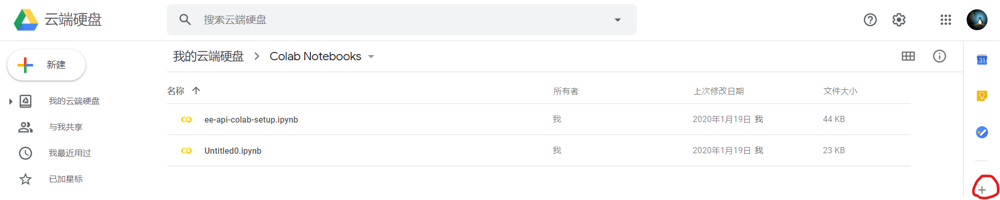
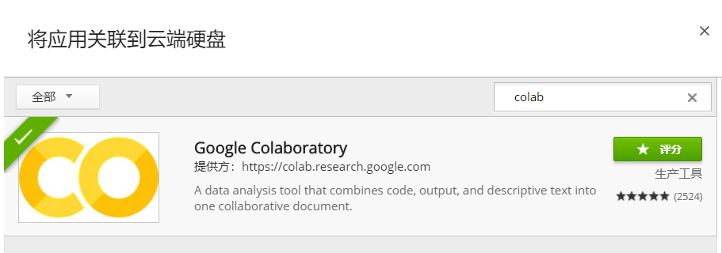
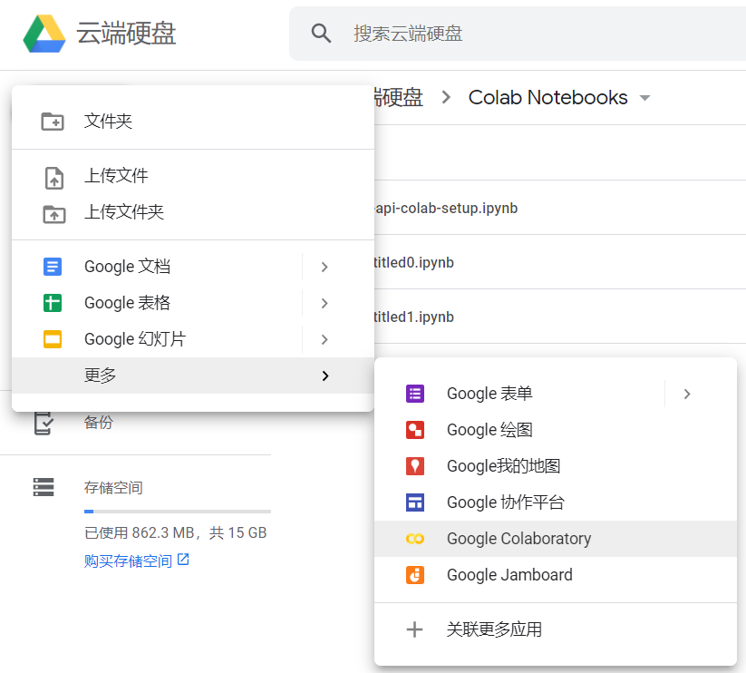
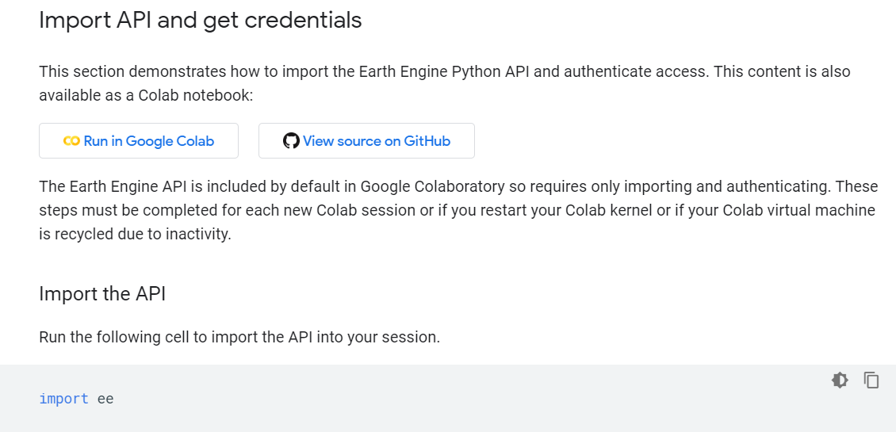

GEE Python 开发环境搭建¶
一、前言¶
GEE 线上 Web Code Editor 绑定的开发语言为 JavaScript，与此同时 GEE 也开发了离线的 Python API。Python API 代码仓库托管在 Github：github.com/google/earthengine-api，官网上关于 Python API 环境配置说明详见：developers.google.com/earth-engine/python_install。
GEE 离线的 Pyhthon API 不仅可以在本机 Python 环境中运行，而且可以在 QGIS 的 Python 环境中运行，甚至还可以在 Google 的 Colaboratory 环境中运行。本文将详细阐述如何在这三种环境之中 GEE Python 开发环境搭建，并根据实际过程中遇到的问题给出可行的解决方案。
二、本机 Pyhon 环境搭建¶
2.1 Python 环境安装¶
Python 环境首推 Miniconda 或者完整的 Anaconda，国内建议使用清华镜像下载：
- Miniconda: mirrors.tuna.tsinghua.edu.cn/anaconda/miniconda/
- Anaconda: mirrors.tuna.tsinghua.edu.cn/anaconda/archive/
最好下载最新版本，安装时勾选添加系统环境变量并将路径修改为盘符的根目录，如下图所示：
Miniconda 安装路径设置

Miniconda 环境变量设置
2.2 GEE Pyhton API 安装¶
打开终端，首先安装 Google 的 Python API 的客户端，命令如下：
pip install google-api-python-client
安装鉴权验证依赖库，输入下面命令：
pip install pyCrypto
如果报错（Pyhthon 2.7.x 一般不会报错，Python 3 可能会报错），改装 pycryptodome：
pip install pycryptodome
继续安装 GEE 的 Python API 库：
pip install earthengine-api
最后验证 GEE 账户：
earthengine authenticate
可能会提示错误：No module named oauth2client，执行下面安装 oauth2client 即可：
pip install --upgrade oauth2client
没有报错后就会打开网页，选择可用的 Google 账号，然后获取令牌，复制后切回终端，并将其粘贴到终端，回车。若出现：Successfully saved authorization token.，则说明令牌验证成功；否则，验证失败，检查操作系统当前用户名是否全为数字或英文字母，若不是，修改为只由数字和英文字母组成的用户名。
2.3 开发环境测试¶
GEE 的 Python API 安装好后，用下面的代码测试环境是否正常运行：
# -*- coding:utf-8 -*-
import ee
ee.Initialize()
image = ee.Image('srtm90_v4')
path = image.getDownloadUrl({
'scale': 30,
'crs': 'EPSG:4326',
'region': '[[-120, 35], [-119, 35], [-119, 34], [-120, 34]]'
})
print(path) # 获取DEM下载地址
若在运行ee.Initialize()时提示：TimeoutError: [WinError 10060] 由于连接方在一段时间后没有正确答复或连接的主机没有反应，连接尝试失败，解决方法有二：
- 方法一：退出 Python 环境，在终端设置代理
set http_proxy=http://127.0.0.1:1080
set https_proxy=http://127.0.0.1:1080
- 方法二：直接在 Python 环境设置代理，代码如下：
# -*- coding:utf-8 -*-
import ee
# ee.Initialize() 之前设置代理
import os
os.environ['HTTP_PROXY'] = 'http://127.0.0.1:1080'
os.environ['HTTPS_PROXY'] = 'http://127.0.0.1:1080'
ee.Initialize()
image = ee.Image('srtm90_v4')
path = image.getDownloadUrl({
'scale': 30,
'crs': 'EPSG:4326',
'region': '[[-120, 35], [-119, 35], [-119, 34], [-120, 34]]'
})
print(path) # 获取DEM下载链接，复制链接至浏览器可下载文件
注意：上述代理设置中的端口信息需要根据自己的实际情况加以修改，但一般情况下就是http://127.0.0.1:1080。根据在 Win10 上的经验，方法二可较好地解决问题。
三、QGIS 开发环境搭建¶
3.1 插件简介¶
Gennadii Donchyts 主导开发了针对 QGIS 的 GEE Python API 插件 qgis-earthengine-plugin，虽然功能尚未覆盖所有 GEE 操作，但处于活跃开发中，当前版本为 v0.0.1 alpha。
qgis-earthengine-plugin 只支持 QGIS 3.8+ 的版本，目前 v0.0.1 alpha 在 v3.8.x 和 3.10.x 上测试正常。
3.2 安装步骤¶
- 从
Plugins菜单中选择Manage and Install Plugins打开插件管理窗口，在搜索栏中，键入Google。将筛选到Google Earth Engine插件，选择它并点击Install Plugin按钮。

QGIS 下的 GEE 插件安装
-
在安装过程中，需要授权。授权方式跟本地 Python 环境的授权类似，但会弹出一个 GUI 窗口，将令牌复制到窗口输入栏即可。
-
设置好代理后可使用下面的代码进行在 QGIS Python Console 中进行测试，运行代码后如果没有错误出现，则说明插件已成功安装。
>>> import ee
>>> image = ee.Image('srtm90_v4')
>>> print(image.getInfo())
{'type': 'Image', 'bands': [{'id': 'elevation', 'data_type': {'type': 'PixelType', 'precision': 'int', 'min': -32768, 'max': 32767}, 'dimensions': [432000, 144000], 'crs': 'EPSG:4326', 'crs_transform': [0.000833333333333, 0.0, -180.0, 0.0, -0.000833333333333, 60.0]}], 'version': 1494271934303000, 'id': 'srtm90_v4', 'properties': {'system:time_start': 950227200000, 'system:time_end': 951177600000, 'system:asset_size': 18827626666}}
若运行过程中可能出现链接错误（一般由代理不稳定引起），可考虑将代理设置添加进 Python 代码：
import ee
# 设置代理并初始化ee开发环境
import os
os.environ['HTTP_PROXY'] = 'http://127.0.0.1:1080'
os.environ['HTTPS_PROXY'] = 'http://127.0.0.1:1080'
ee.Initialize()
image = ee.Image('srtm90_v4')
print(image.getInfo())
3.3 入门示例¶
在执行更多示例前，需要关注 qgis-earthengine-plugin 插件的一个严重 bug，即在没有底部图层之前无法正确加载影像。解决方法有三：
-
方法一：在执行需要影像显示的示例之前添加 OpenStreetMap 图层，操作十分简单，点击
Brower窗口栏下的XYZ Tiles，再双击OpenStreetMap添加地图。 -
方法二：下载 qgis-earthengine-examples，解压后执行 Basemaps/qgis_basemaps.py，然后在
XYZ Tiles下会增加很多可选图层，推荐选择Google Satellite Hybrid。 -
方法三：下载 QuickMapServices 插件，采用
Install from ZIP的方式安装之。然后，在QGIS点击Web -> QuickMapServices -> Settings -> More services -> Get contributed pack -> Save，随后就可以在Web -> QuickMapServices下发现众多图层可选，推荐Google -> Google Hybrid。
有了底图后，就可以正常显示影像了，下面介绍三个示例。
3.3.1 影像数据显示¶
# 导入ee模块
import ee
# 添加影像变量
image = ee.Image('LANDSAT/LC08/C01/T1_TOA/LC08_044034_20140318')
# 定义显示参数变量
vizParams = {
# NIR red green
'bands': ['B5', 'B4', 'B3'],
'min': 0,
'max': 0.5,
'gamma': [0.95, 1.1, 1]
}
# 定位底图（San Francisco Bay, 旧金湾）并显示影像
Map.setCenter(-122.1899, 37.5010, 10)
Map.addLayer(image, vizParams, 'false color composite')

简单的图像显示
3.3.2 归一化植被指数（NDVI）计算¶
# 导入ee和ee_plugin中的Map模块
import ee
from ee_plugin import Map
# 添加影像变量
landsat8 = ee.Image('LANDSAT/LC08/C01/T1_TOA/LC08_044034_20140318')
# 计算NDVI并显示影像
ndvi = landsat8.normalizedDifference(['B5','B4'])
Map.addLayer(ndvi,{'min':-1, 'max':1, 'palette':['blue', 'white', 'red']}, 'NDVI', True)
归一化植被指数（Normalized Difference Vegetation Index, NDVI）是量化处于生长期植被覆盖情况的重要指标，GEE 基于 Landsat、MODIS 等卫星遥感影像得到的 NDVI 时序数据已经在各尺度区域的植被动态变化监测、土地利用/覆被变化检测、宏观植被覆盖分类和净初级生产力估算等研究中得到了广泛的应用。本示例的结果如下图所示：

NDVI 合成影像
3.3.3 机器学习之 CART¶
最后一个示例是 GEE 在 QGIS 上的一个机器学习分类列子，代码如下：
import ee
from ee_plugin import Map
# 导入去云的Landsat 8 T1级合成影像, 详细参见：
# https://developers.google.com/earth-engine/datasets/catalog/LANDSAT_LC08_C01_T1
# https://developers.google.com/earth-engine/landsat#landsat-collection-structure
l8 = ee.ImageCollection('LANDSAT/LC08/C01/T1')
image = ee.Algorithms.Landsat.simpleComposite(**{
'collection': l8.filterDate('2019-01-01', '2019-12-31'),
'asFloat': True
})
# 使用这些谱段进行预测
bands = ['B2', 'B3', 'B4', 'B5', 'B6', 'B7', 'B10', 'B11']
# 加载训练点, 数字属性“类”存储已知标签
points = ee.FeatureCollection('GOOGLE/EE/DEMOS/demo_landcover_labels')
# 表格的此属性存储土地覆盖标签
label = 'landcover'
# 在影像上叠加点以进行训练
training = image.select(bands).sampleRegions(**{
'collection': points,
'properties': [label],
'scale': 30
})
# 使用默认参数训练CART分类器
trained = ee.Classifier.cart().train(training, label, bands)
# 使用与训练相同的波段对图像进行分类
classified = image.select(bands).classify(trained)
# 显示输入和分类结果
Map.centerObject(points, 11)
Map.addLayer(image, {'bands': ['B4', 'B3', 'B2'], 'max': 0.4}, 'image')
Map.addLayer(classified,
{'min': 0, 'max': 2, 'palette': ['red', 'green', 'blue']},
'classification')
上述代码用 CART 分类器对 Landsat 八个谱段影像进行了样本训练分类，结果如下：

CART 分类器分类结果
可以通过底图对比分类结果：

分类栅格影像底图
3.3.4 更多示例¶
更多示例参见 吴秋生 的 qgis-earthengine-examples 仓库。
四、Colaboratory 环境搭建¶
Colaboratory 是 Google 的一个研究项目，旨在帮助大众普及机器学习和相关研究成果。Colaboratory 是一个基于 Jupyter 笔记本的免费在线编程环境，不需要进行任何设置就可以使用，并且完全在云端运行。Colaboratory 笔记本文件存储在 Google Drive 中，并且可以共享，如同使用 Google 文档或表格一样。
4.1 绑定 Google Drive¶
Colaboratory 是 Google Drive 的一个关联应用，所以要使用 Colaboratory 需要绑定 Google Drive。首先登录到 Google Drive：drive.google.com，点击右下角的 +，如下图所示：

Colaboratory 绑定 Google Drive
然后搜索 colab 并安装之：

关联 Google Colaboratory 应用
4.2 使用 Colaboratory¶
点击左上角的 +新建 按钮，然后将鼠标移动到 更多，选择 Google Colaboratory 进入 Colaboratory 界面。

进入 Colaboratory 环境
Colaboratory 已经为用户准备好 GEE 的 Python API 环境，访问：Python Installation - Colab Notebook，点击右侧目录中的 Import API and get credentials，然后点击 Run in Google Colab 将示例程序添加进 Colaboratory 工作区。随后即可根据该示例熟悉 Colaboratory 环境下的 GEE Python API 开发流程。

Colaboratory 环境 GEE Python API 示例
五、总结¶
本文详细介绍了如何在 本地 Python、QGIS 下的 GEE Python API 插件 和 Colaboratory 这三种环境中搭建 GEE Python API 开发环境，由于在国内需要科学上网才能使用 GEE Python API，故本文还根据实际过程中遇到的问题给出可行的解决方案。
三种环境中，本地 Python 和 Colaboratory 环境都由 GEE 官方维护，功能完善，但与 GIS 结合性相对于 QGIS 较差。而 QGIS 下的 GEE Python API 插件 虽与 QGIS 结合性较好，但该项目由爱好者发起，且目前处于早期开发阶段，插件功能未完全覆盖 GEE Python API。个人比较看好 QGIS 下的 GEE Python API 插件，后续会密切关注其新功能开发和版本更新。